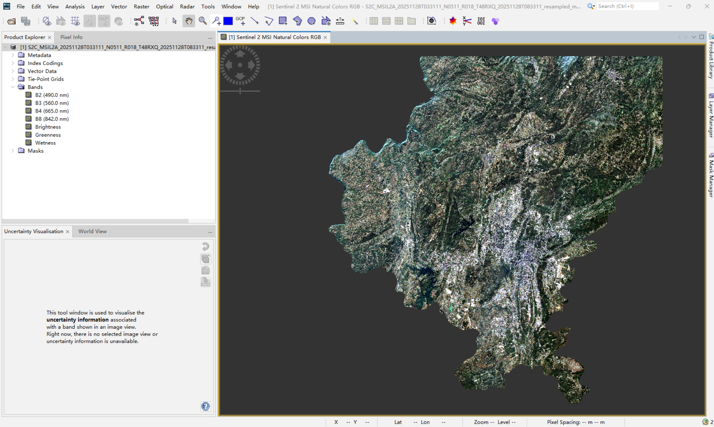
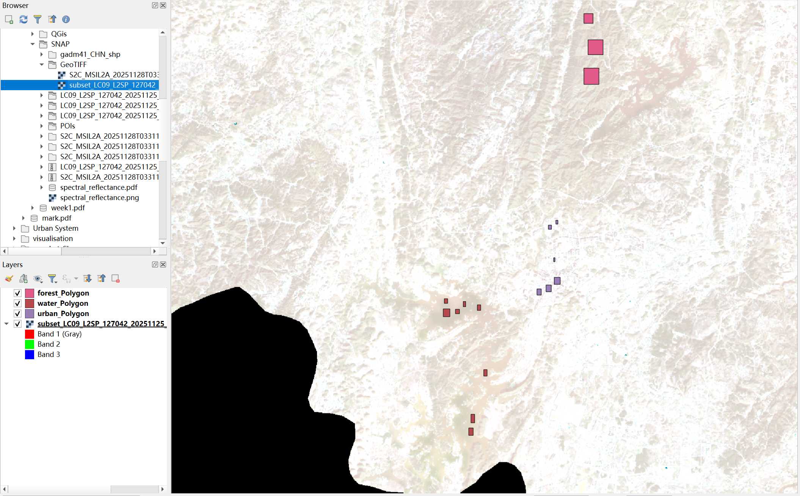
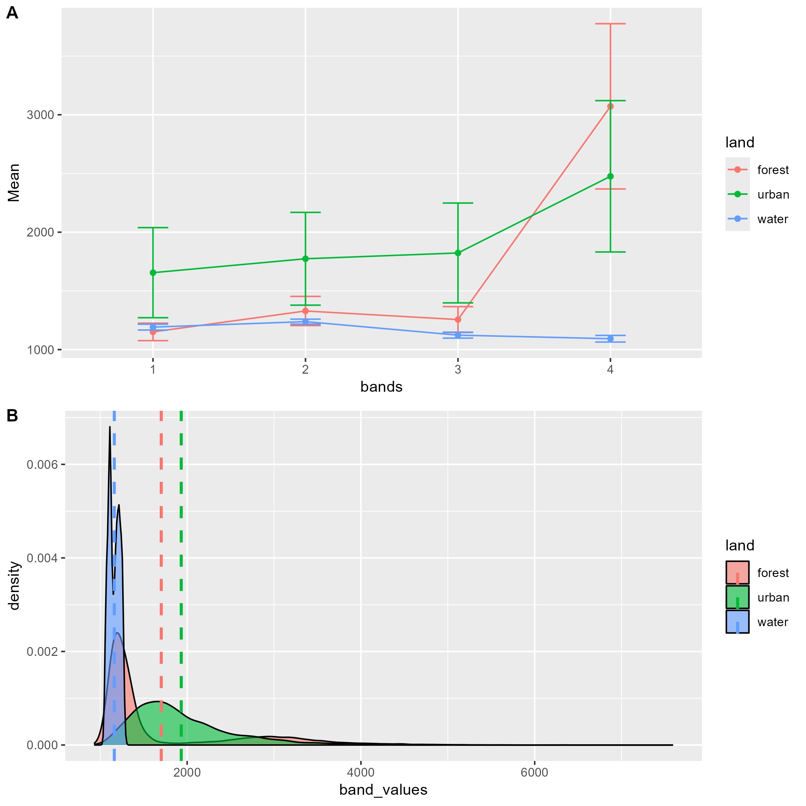
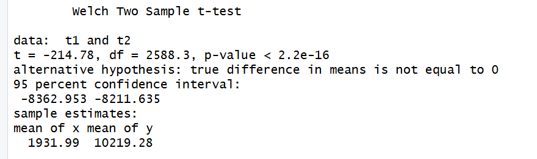

Week 1: Introduction to Remote Sensing and Spectral Analysis Practice
A Comparative Study of Multisource Data (Sentinel-2 & Landsat-9) in My Hometown, Guiyang
1. Content Summary
1.1 Physical Fundamentals of Remote Sensing & EMR
This week shifted how I think about satellite data — it is not photography but a physical measurement of electromagnetic radiation (EMR) interactions (Brady 2021). The core formula \(\lambda = c/v\) captures something simple but important: wavelength and frequency move in opposite directions.
Before reaching the sensor, the energy goes through a series of interactions (Tempfli et al. 2009). In the atmosphere, Rayleigh scattering makes the sky appear blue and affects visible bands, while Mie scattering from aerosols and non-selective scattering from clouds add further complications — which is exactly why atmospheric correction is such a challenge in persistently cloudy places like Guiyang. Once the energy reaches the surface, it is either absorbed, transmitted, or reflected, and it is this reflected portion that the sensor actually captures.
1.2 Critical Review of the Four Resolutions
The lecture covered four resolutions that determine what a sensor can and cannot detect:
- Spatial resolution — the smallest observable feature; Sentinel-2’s 10m gives it a clear advantage at urban scale (Jensen 2015)
- Spectral resolution — the number and width of bands; different materials reflect differently across bands, which is how spectral signatures work as surface fingerprints
- Temporal resolution — the revisit period, which matters most for tracking change over time
- Radiometric resolution — the sensor’s quantisation depth; 12-bit means 4,096 brightness levels, affecting how well subtle surface differences are captured
1.3 Independent Thought: Why Choose My Hometown, Guiyang?
I selected my hometown, Guiyang, as the study area. Part of it is personal familiarity, but there is also a genuine research reason. Guiyang’s rugged karst terrain produces a pronounced BRDF effect, meaning that observation angle and illumination geometry can noticeably change the apparent reflectance of the same surface — which makes it an interesting test case for cross-sensor comparison. At the same time, while Sentinel-2 has the spatial detail advantage, Landsat’s archive going back decades is the only option for tracking how the city has expanded over the years (Tempfli et al. 2009).

2. Applications
2.1 Tasseled Cap Transformation (TCT) in Urban Morphology
In practice, I applied the Tasseled Cap Transformation (TCT), which extracts three biophysical indicators from the spectral bands:
- Brightness — picked out high-density built-up areas, including the newer “Big Data Centers” that have appeared in Guiyang
- Greenness — showed the green corridors that survived rapid urban expansion, useful context given Guiyang’s status as a National Forest City
- Wetness — mapped the Nanming River and Hongfeng Lake water systems, relevant for understanding how blue-green space functions in the city
2.2 Cross-Sensor Research: Insights from ESA WorldCover
The ESA WorldCover 10m project shows what 10m resolution can do for urban monitoring. Compared to 30m Landsat, higher-resolution Sentinel data reduces the mixed pixel problem at urban edges (Jensen 2015). That said, optical sensors still struggle in persistently cloudy places like Guiyang — which is why integrating SAR data later in the module seems like the natural next step.
3. Technical Workflow and Statistical Analysis
3.1 Automated Workflow from SNAP to R
The workflow ran from SNAP through to R and QGIS. I used SNAP for resampling, georegistration, and subsetting the imagery to the study area boundary. In R, the terra package handled pixel extraction — I wrote a band_fun function to batch-extract values and convert them into a long-format table suitable for plotting. QGIS was then used to cross-check spatial alignment, confirming that the Sentinel-2 and Landsat-9 layers and my digitised training points all sat in the same coordinate space (Figure 3).


Figure 3: QGIS spatial consistency check. Both sensors and the digitised training points align in the same coordinate system — a necessary step before pixel extraction in R.
3.2 R-Based Spectral Signature Statistical Analysis
Using terra::extract and long-format conversion via tidyverse, I extracted the spectral response values of typical land covers in Guiyang and plotted their signature curves (Figure 4):
The spectral curves show some clear patterns. Forest pixels (Plot A) have low reflectance in the visible bands (Bands 1–3) but jump sharply in near-infrared (Band 4), which is consistent with how healthy leaf cells reflect NIR. Water behaves the opposite way — it stays low across all bands and drops further into NIR, reflecting strong absorption at longer wavelengths. The urban pixels are the most interesting: wide standard deviation error bars across every band, and Plot B shows a broad, flat distribution rather than any clear peak. That heterogeneity makes sense given what downtown Guiyang actually contains — concrete, asphalt, metal roofs, and scattered patches of greenery all mixed together.

4. Personal Reflection
4.1 Statistical Significance vs. Physical Meaning
In this week’s practical, I performed a Welch t-test on the pixel values of Sentinel-2 and Landsat-9 within the urban areas of my hometown, Guiyang.

As shown in Figure 5, the t-test returned \(t = -214.78\), \(p < 2.2 \times 10^{-16}\), which is a very significant difference. But this does not mean something went wrong — it reflects genuine physical differences between the two sensor systems.
The main reasons are worth spelling out. Each sensor samples the electromagnetic spectrum through slightly different windows — even the “same” NIR band has different bandwidths and centre wavelengths, which matters for Guiyang’s dense subtropical vegetation (Butcher 2016). Atmospheric correction algorithms also diverge: Sen2Cor (Sentinel) and LaSRC (Landsat) handle the complex aerosol conditions in Guiyang’s karst terrain differently, and those subtle differences get amplified in a t-test. On top of that, Guiyang’s rugged terrain introduces BRDF effects — the two satellites pass at different times and view angles, so they are literally measuring slightly different things even when pointed at the same spot.
The practical takeaway is that cross-sensor data fusion needs proper cross-calibration or a Harmonized Landsat Sentinel (HLS) product rather than a direct merge (Jensen 2015).
4.2 Skill Growth and Future Work
This week I picked up the operational tools (SNAP, R, QGIS), but the more useful shift was moving toward a reproducible research mindset. Automating the spectral signature extraction in R means the analysis is transparent and repeatable — which matters if I want to build on it later or share it. Optical data gave a solid start here, but cloud cover in Guiyang is a persistent problem that one week of data cannot solve, so I am looking forward to working with SAR data in later weeks. The longer-term aim is to use this kind of workflow to track how urban expansion has changed Guiyang’s ecological baseline over the past decade — something that could actually be useful for planners working in karst regions.